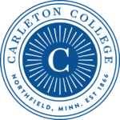

Invite Louis to Speak at Your School or Event
Bring expert insights on student motivation, navigating the college transition, and overcoming academic obstacles to your next event or workshop.
Book an Event
We had Dr. Newman visit during our three-day end of year faculty conference, and many faculty commented that his presentation was amazing. In fact, his talk was the #1 choice on the event evaluations as “most useful part of the conference.”
Director, Faculty Center for Teaching & Learning at UCF
In the press, media and podcasts
In the Press
Kirkus Review
Thinking Critically in College: The Essential Handbook for Student Success
Newsweek
Look to the Liberal Arts to Lower the Temperature of Campus Culture Wars
Inside Higher Ed
Early and Often: Teaching Critical Thinking Skills for Student Success
Jewish Journal
Thinking about Thinking
University Business
How Colleges are Failing Our Students
The College Fix
Stanford Dean’s New Book Helps Undergrads Learn to Think Critically
The Teaching Professor
Five Ways to Help Your Students Become Better Critical Thinkers
eCampus News
Four Ways to Enhance Your Critical Thinking Skills
Sonoma Family Life
Get Smart About College: How to Make a Wise Choice
Journal of Continuing Education in Nursing
What’s More Critical to Nursing than Thinking Critically?
Just the News
Amid rise of AI, polarization, intolerance, ex-prof hopes to reinstill critical thinking in students
Inside Higher Ed
The Beating Heart of Gen Ed
Business Insider
How to Choose the Right College
J Weekly
Critical thinking: Embedded in Judaism, desperately needed in society
Inside Higher Ed
If We Want Free Speech, We Need to Teach It
LINK for Counselors
How to Help your Students Succeed Academically in College
LINK for Counselors
A College Education is a Lot More Than a Ticket
Achievable
Why most college advice points students in the wrong direction
Media & Podcasts
How to Get the Most Out of College Podcast
Uncovering the Hidden Curriculum with Louis Newman
Your College-Bound Kid Podcast
Dr. Louis Newman: Thinking Critically in College Interview
IlluminatED Higher Education Podcast
Thinking Critically in College with Louis Newman
Issues and Ideas with Chris DeBello
The Importance of Teaching Critical Thinking in College
Radio Free Hillsdale
Dr. Louis Newman on Thinking Critically in College
WRGC
Thinking Critically in College with Louis Newman: Focus On The Community
Spotify Podcast with Ann Garcia
A Roadmap for Student Success
College Admissions in a Changing World Podcast
How to Choose a College Intelligently by Using the Right Data
Webinar Jam
Find Your Best Fit Colleges with Kate Stone
The Shift Podcast
What Students Don’t Know Going into College that They Need to Know
Hedagogy with Steve Pearlman
Thinking Critically in College with Louis Newman
Carleton Connects
Louis Newman and How to Make the Most of College
Parent Venture
Thinking Critically in College: Essential Tools for Student Success
Shift Podcast
How to Make the Most of Your College Experience Academically
Tests and the Rest
What Does Thinking Critically In College Mean?
Stanford Continuing Studies
A Smarter Way to Think About College
Shift Podcast
Preparing in High School for College
Forum Daily News
Critical Thinking in the Age of Artificial Intelligence
Where Louis has spoken and been featured
Guest speaker at





Featured in